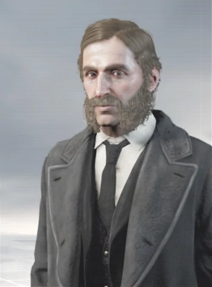
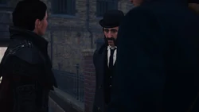

Frederick Abberline
Fost ceasornicar din, Frederick Abberline s-a alăturat poliției metropolitane în 1862. Începând ca polițist, Abberline a fost chemat când a fost găsit un cadavru în construcția primei căi ferate subterane. Constatând că decesul a fost cauzat de o rână înjunghiată, el a trimis cadavrul la Belle Isle pentru inspecție ulterioară. Trecând prin mahalale, a încercat să evite copiii străzii curioși care încercau să arunce o privire corpului. Ajuns în cele din urmă la curtea mortuară, a descoperit că cadavrul fusese înlocuit cu un cadavru al unui ponei mort. Odată cu eșecul său jenant, colegii săi ofițeri au început să-i dea porecle și să folosească jocuri de cuvinte. În cele din urmă, Abberline a decis să se întoarcă la Belle Isle și să mituiască copiii pentru a descoperi identitatea hoțului: un bărbat înveșmântat care poartă o glugă, fără îndoială un asasin. După ce s-a străduit să muncească din greu, eforturile sale au dat roade cu o promovare ca sergent până în 1865.

Încercând să-și facă un nume, Abberline a apelat la ajutorul asasinilor Jacob și Evie Frye pentru a-l ajuta să aresteze criminali care făceau parte din Blighters afiliați templierilor până în 1868, plătind gemenilor bani pentru răpirea sau uciderea țintelor. Cu toate acestea, Abberline a preferat ca țintele să fie readuse în viață, mai degrabă decât moarte.
În 1873, Abberline obținuse gradul de inspector și a fost transferat la Whitechapel. În această perioadă, el a făcut cunoștință cu autorul american Mark Twain și agentul Pinkerton, Tommy Greyling, care se aflau la Londra, urmărind o templieră americană Alice, care furase mai multe manuscrise de la Muzeul Londrei. Împreună cu Evie și Henry, Abberline i-a ajutat pe cei doi să recupereze manuscrisele de la Alice, dar în cele din urmă a eșuat când templierii au reușit să scape din Anglia și să se întoarcă în Statele Unite. În 1888, un asasin britanic care avea să devină în curând cunoscut sub numele de „Jack Spintecătorul” a uzurpat controlul celor din Rooks și a comis o serie de crime înspăimântătoare. Aceste crime, împreună cu publicarea mai multor scrisori, presupuse a fi scrise de Jack, în ziarul local au contribuit la stimularea unei atmosfere de frică în oraș. Cu ajutorul lui Jacob, Abberline a rămas fața publică a anchetei, în timp ce asasinii și-au urmat propria cale în oprirea criminalului. Cu toate acestea, în curând, Jacob a dispărut, iar Abberline a fost forțat să apeleze la ajutorul lui Evie Frye, pe care Jacob la convocat deja din India, atât în oprirea lui Jack, cât și în localizarea potențială a lui Jacob. La sosirea ei, Abberline a informat-o despre dispariția lui Jacob și că avea cazare în Whitechapel lângă un bordel, trimițând-o acolo să găsească indicii. Aceasta a jurat că fie o să aducă capul lui Jack, fie o să moară incercând.